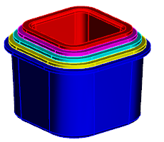

更新部件 5
-
选择装配→WAVE→关联管理器。
在过时的冻结部件列表框中，您可以看到部件 5的状态为冻结。
-
选择 wav3_load_part5.prt 并点击编辑冻结状态。
-
在编辑冻结状态对话框的会话中的冻结部件列表框中，选择 wav3_load_part5.prt。
-
点击解冻，然后点击确定。
部件 5将被更新到新链接面的大小。冻结部件间链接在您不想更新链接直到可以更新时很有帮助。其中一种情形是您正在编辑父部件，而它可能引起下游部件的更新警告。

-
使用 Ctrl + Z 快捷键以撤销部件 5的更新。
您也可以在装配导航器中解冻部件。

-
在装配导航器中，右击部件 5并选择 WAVE→解冻。
部件 5将被更新到新链接面的大小。
-
关闭所有部件。